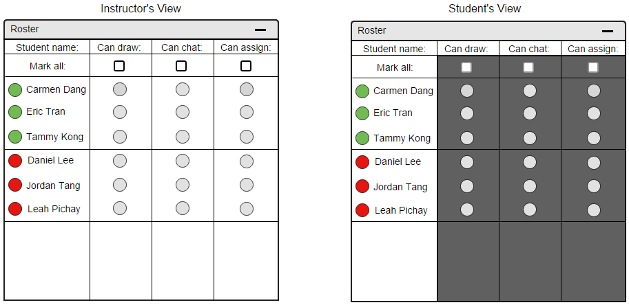
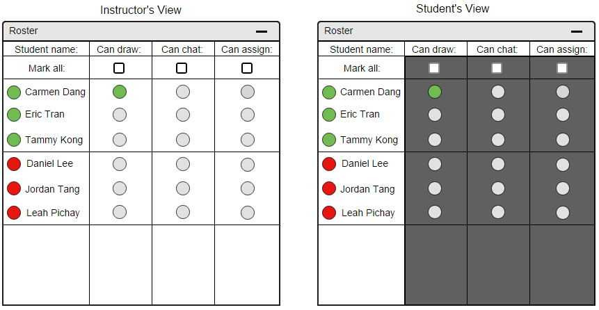
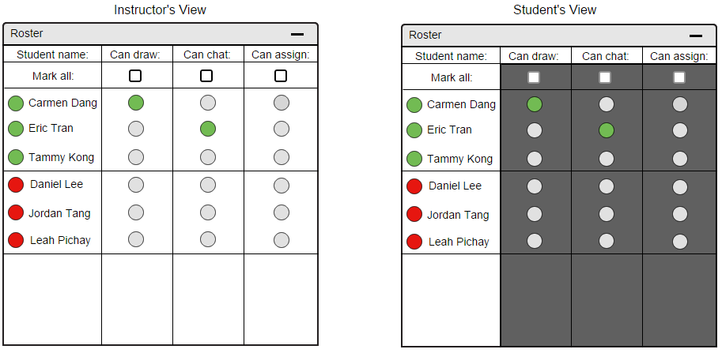
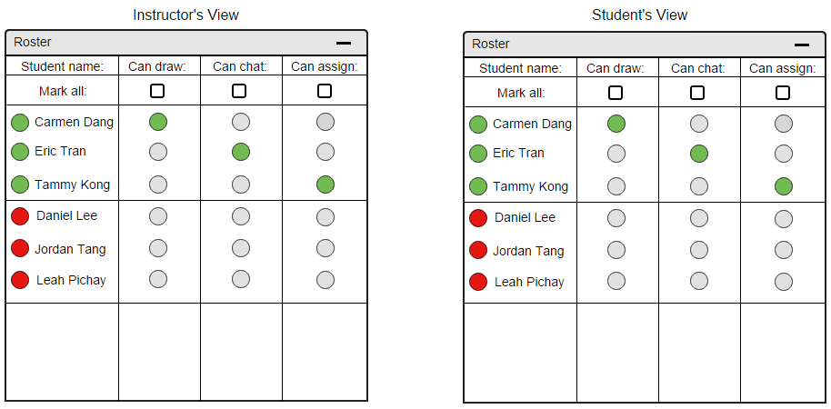
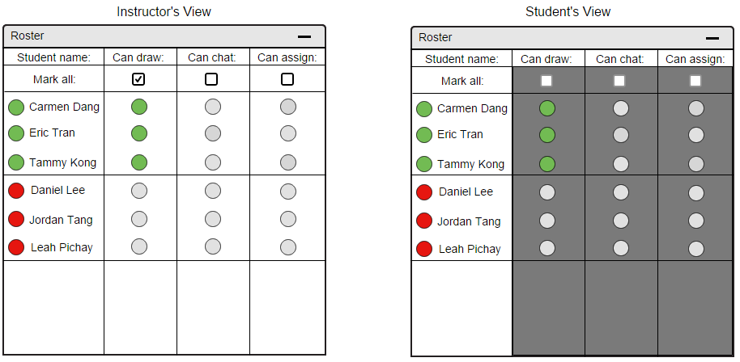

2.6.3. Privileges
An instructor has all the administrative capabilities. Additionally, they have the ability to assign privileges to their students via the roster.
In Figure 74 below, we compare the instructor's view of a roster to a student's view. The student's view of the roster is much more limited.
Figure 74 is the general roster, without any students given any privileges.
The student's roster background are greyed out, to indicate that they do not have access to modifying the roster.
The student's "Mark all" check boxes under each privilege are also greyed out.
For the purpose of privileges, remote guests' privileges are controlled in the same manner as students.
The following figures only show a student's privileges changing. The same concepts however apply for remote users.

Figure 74: A side by side view of an instructor's view of the roster and a student's view
The instructor can assign a privilege to a student individually. In order to do so, the instructor clicks on the bubble indicator for the privilege he would like to assign a student.
To assign the privilege to draw on a layer of the lecture presentation, an instructor clicks on the "Can draw" bubble indicator in the row of the student's name.
To assign the privilege to use the chat function, an instructor clicks on the "Can chat" bubble indicator in the row of the student's name.
To assign the privilege of administrative rights, an instructor clicks on the "Can assign" bubble indicator in the row of the student's name.
Figure 75 shows the scenario when the instructor clicks on the "Can draw" bubble indicator for Carmen Dang, the button changes from grey to green, indicating she now has the privilege.

Figure 75: Instructor assigning Carmen Dang drawing privileges
On the student's view of the roster, she sees that her bubble indicator for "Can draw" is green as well.
Carmen has the ability to draw, or make mark-ups, on the main lecture slide at this point in time.
Figure 76 below demonstrates the scenario where the instructor assigns a student chatting privileges.
If the instructor would like to assign chatting privileges, it is the same concept. Click on the "Can chat" bubble indicator next to the student's name.
The color of the bubble changes accordingly, to green, to indicate that the student now has the privilege.

Figure 76: Instructor assigning Eric Tran chatting privileges
If the instructor would like to assign chatting privileges, it is the same concept. Click on the "Can chat" bubble indicator next to the student's name.
The color of the bubble changes accordingly, to green, to indicate that the student now has the privilege.
When an instructor wants to give a student the ability to put others in charge, they can assign the student administrative privileges.
To do so, the instructor clicks on the "Can assign" bubble indicator next to the student's name, which changes the color of the indicator to green.
The purpose for giving other students administrative privileges is to promote student-teacher interactions in the presentation slides.
The student's view of the roster is at this point, equivalent to the instructor's. The student has the ability to assign privileges to other students.
Figure 77 below depicts the views of an instructor and a student. Notice that there are no difference.

Figure 77: Instructor assigning Tammy Kong admin privileges
For convenience purposes, an instructor has the option to assign privileges to all of his or her students at one instance.
This can be done via the check box under the respective privilege that the instructor would like to give all.
To avoid redundancy issues, assigning privileges to all students can be modelled with a single scenario where we assign one privilege with the "Mark all" check box.
Looking at Figure 78, the instructor clicked on "Marked all" check box under the privilege "Can draw". All attending students now have the ability to draw on the main lecture slide.

Figure 78: Instructor assigns all active students drawing privileges
Prev: attendance
| Next: show-hide-overlays
| Up: roster
| Top: index